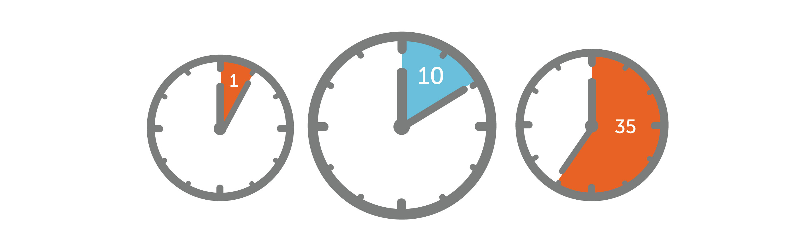

Поглотители времени
Определение поглотителей времени: Поглотители времени - это факторы или действия, которые отнимают у нас время без необходимости и умаляют нашу эффективность. -
Примеры поглотителей времени: постоянные переключения между задачами, отвлекающие уведомления на смартфоне, неорганизованный рабочий процесс, неправильное планирование и прокрастинация.
